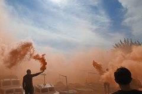

Danas ručamo, mali i veliki, kadli stigne poruka iz Zadra da su se potresli
'ali nije tak strašno jer je epicentar bio tam negdje kod Paklenice.'
Kaaaaj!?!?
Nastala je opća dreka, Dijete samo što nije udrilo u plač (briga za njezinim ljubljenim morem),
ostali u smijeh, i krenulo je zvanje poznatih,
jeste dobro, jeste živi,
onda , naravno, moja stara 'aha, sad znate kak je nama bilo'
moj brat' samo sam čekao kad će se početi
hvaliti kako je ona jači potres doživjela',
uglavnom,
neki od naših jako, jako su se uplašili, zavisi tko u kakvim objektima živi,
i tko je strašljiviji a tko nije,
ali ,
zabogamiloga!!!!!
zar baš tamo?
Posjećujući posljednja počivališta naših starih, srce me odvelo u posljednje prebivalište njihovo, u Staru kuću.
Vinodolska dolina, u zaleđu Crikvenice, odiše njihovim načinom života i mirom... posvemašnjim mirom, piše Mayday.
Prerijetko se spuštam ovom cesticom, s pogledom na Klimno. Stara kapija čuva inicijale sadašnjih vlasnika,
sasvim slučajno to su inicijali naših prethodnika.
Ulazna vrata ispočetka odbijaju suradnju, kažu - "A što sad...djeco, otvarate nas svega par puta godišnje, eto vam sad!"
Sinoć su me digli iz posteje šušurom i praskovima i bljeskovima. Nisan baš neki jubitej naganjanja krpaša po travi, ali ipak, oćeš-nećeš pogledam diguoda kako trču po ekranu! Danas, točno u podne našo san se na Matejuški di je bilo puno mladosti. I onda je počelo, a izgledalo je ovako nekako. Uz tuljenje vaporih u luci.
Izvor podataka: Blog dnevnik